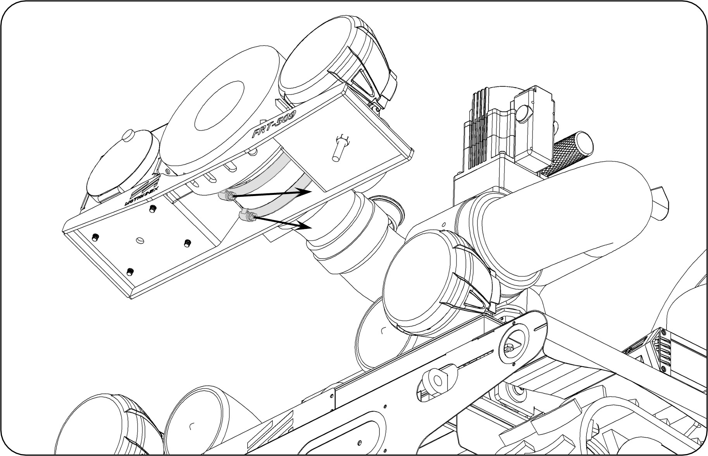

故障描述： 管束斷掉
原因分析： 外力撞擊
| 項目 | 品名 / 料號 | 規格 / 數量 |
|---|
| 一般工具 | 8號套筒、扭力板手 | 50-250kg/cm |
| 零組件 | 白鐵管束 5” (399070007) | 2個 |
🛠️ 維修流程
步驟 1：拆卸舊件
使用 8 號套筒將舊的毀損管束取下 。

步驟 2：安裝新件
將新管束裝上，先使用套筒固定，但先不要鎖死。
⚠️ 注意：確認鎖固位置不會影響「瞄子」的伸縮功能。
步驟 3：正式鎖固
使用扭力板手將管束精確鎖固至 50kg/cm 即可完成更換。
步驟 4：功能測試
測試瞄子伸縮功能是否順暢。
⬅️ 回到目錄首頁